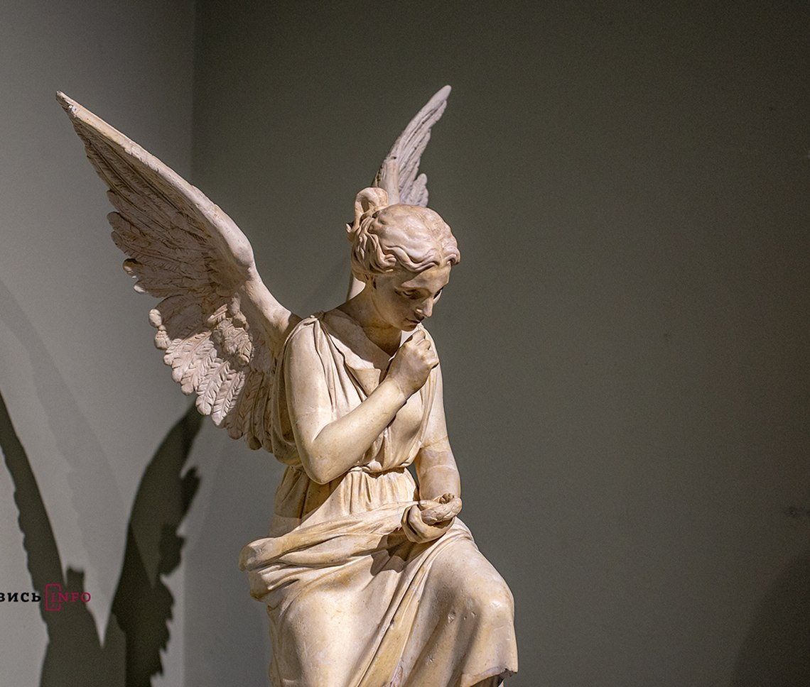
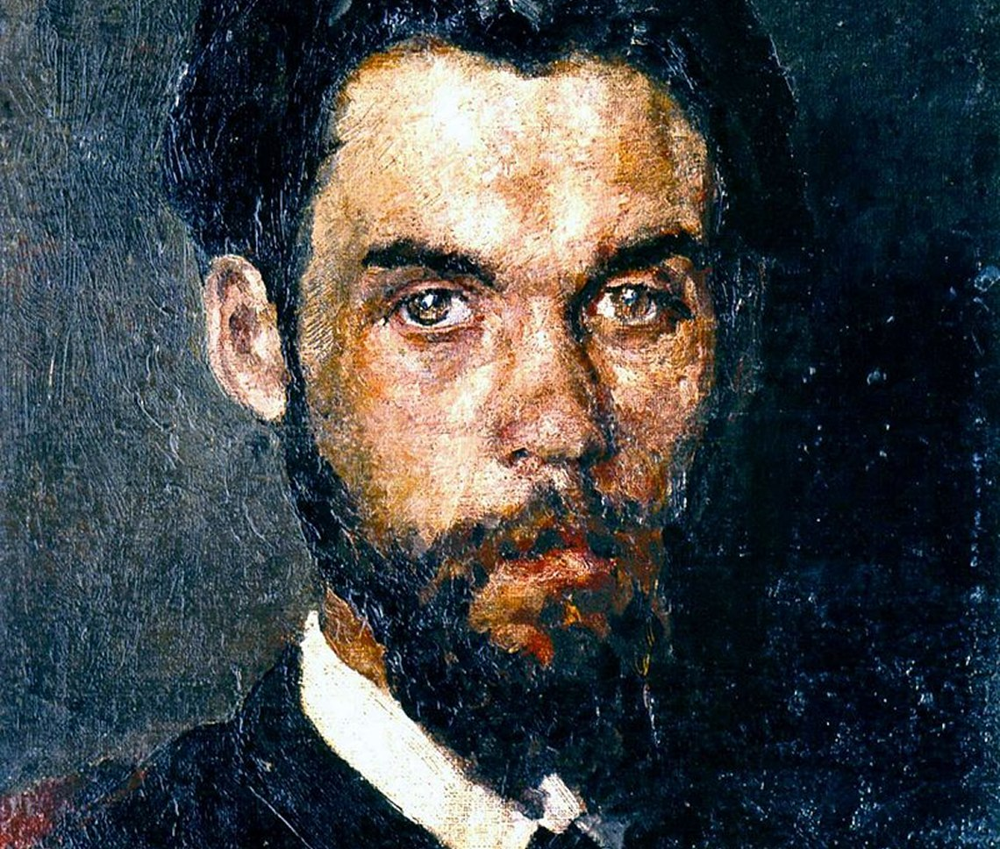
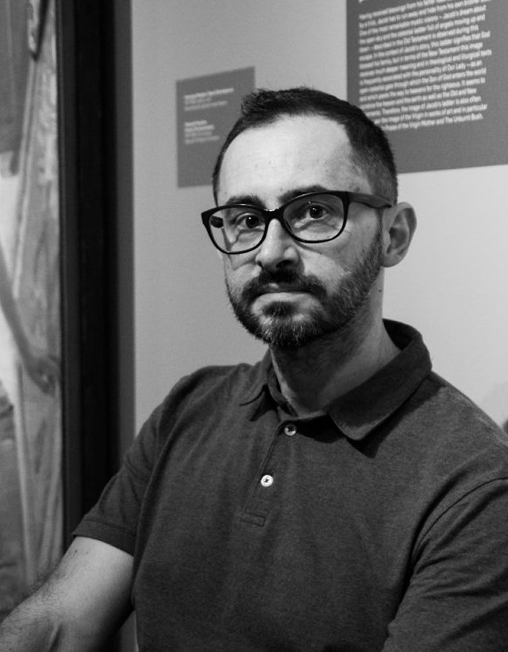
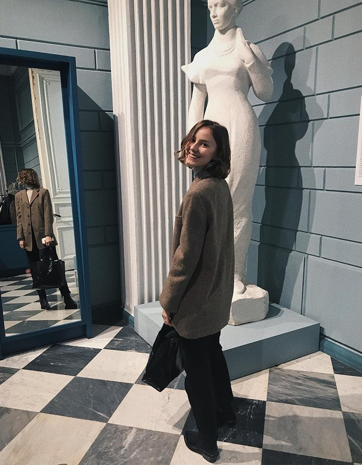
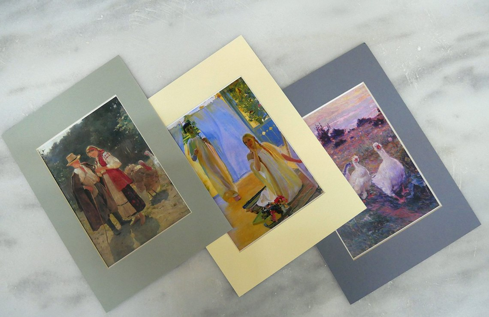
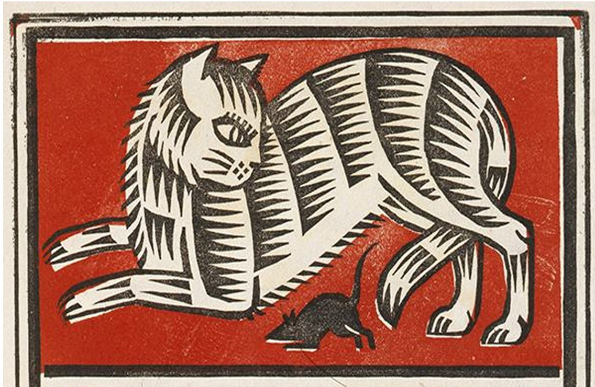

Кураторська виставка “Ангели”
Виставковий проект «Ангели» — знакова подія для української культури і водночас наймасштабніший...
Купити квиток10 серпня - 10 листопада
Внесок українських митців у світову культуру 19-20 ст.
Купити квиток
Виставковий проект «Ангели» — знакова подія для української культури і водночас наймасштабніший...
Купити квиток
Знакові роботи Алли Горської, Миколи Самокиша, Федора Кричевського та інших митців.
Купити квиток
Таємниці підготовки, історії експонатів, магія дійства і момент вашої присутності — розгортатиметься...
Зареєструватись
Цієї неділі о 14:00 на арт-мандрівників чекає останній пункт кругосвітньої подорожі - Австралія.
ЗареєструватисьОберіть зручний день, зареєструйтесь на події, що цікавлять, купіть квиток заздалегідь, щоб нічого не завадило вам насолоджуватись мистецтвом.
Почати
9 серпня 2019
Друзі, сьогодні п'ятниця! А це означає, що час оголосити переможця розіграшу...

9 серпня 2019
Музей з левами не може просто так взяти і пропустити Міжнародний день котів!